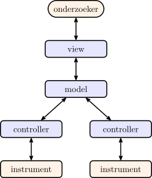

Model-View-Controller¶
MVC en het gebruik van packages¶
MVC staat voor Model-View-Controller en is een belangrijk, maar wat diffuus concept in software engineering en is vooral van toepassing op gebruikersinterfaces. Het belangrijkste idee is dat een programma zoveel mogelijk wordt opgesplitst in onderdelen. Het model bevat de onderliggende data en concepten van het programma (een database, meetgegevens, berekeningen, etc.); de controller praat met de fysieke omgeving en reageert bijvoorbeeld op invoer van een gebruiker en past het model aan; de view is een weergave van de data uit het model en vormt de gebruikersinterface zelf. Vaak praten alle onderdelen met elkaar, maar een gelaagd model is makkelijker te overzien en dus eenvoudiger te programmeren. In het geval van een natuurkunde-experiment is dit vaak mogelijk. Daarmee krijgt MVC bij ons een andere betekenis dan bijvoorbeeld bij het bouwen van websites. Het gelaagd MVC-model dat wij gaan gebruiken is hieronder weergegeven:

De controllers communiceren met de apparatuur; het model bevat de meetgegevens, berekeningen en de opzet van het experiment; de view zorgt voor een gebruikersinterface met weergave van de data.
Het scheiden van je programma in deze lagen kan enorm helpen om ervoor te zorgen dat je geen spaghetticode schrijft — ongestructureerde en moeilijk te begrijpen code. Wanneer het drukken op een knop in de code van de grafische omgeving direct commando's stuurt naar de Arduino of dat de code voor het doen van een enkele meting meteen de $x$-as van een grafiek aanpast, sla je lagen over in ons model en knoop je delen van het programma aan elkaar die niet direct iets met elkaar te maken hebben. De knop moet een meting starten, ja, maar hoe dat precies moet is niet de taak van de gebruikersinterface. En de meting zelf moet zich niet bemoeien met welke grafiek er precies getekend wordt. Je zult merken dat het heel lastig wordt om overzicht te houden en later aanpassingen te doen als je alles door elkaar laat lopen. Je zult dan door je hele code moeten zoeken als je óf de aansturing van de Arduino, óf de grafische interface wilt aanpassen. En dus gaan we alles netjes structureren.
De verschillende onderdelen in het model kunnen we voor ons experiment als volgt beschrijven:
- View
- Het
startpunt
van je applicatie. Geeft de opdracht om een meting te starten en geeft na afloop de resultaten van de meting weer op het scherm. - Model
- De code die het experiment uitvoert door verschillende metingen te doen en instellingen aan te passen, zoals de spanning over de LED. Het model weet hoe het experiment in elkaar zit en dat er bijvoorbeeld een weerstand van 220 Ω aanwezig is. Geeft opdrachten aan de controller.
- Controller
- De code die via pyvisa praat met de Arduino. Opdrachten worden omgezet in firmwarecommando's en doorgestuurd naar het apparaat.
Het opsplitsen van je programma hoeft niet in één keer! Dit kan stapsgewijs. Je kunt starten met een eenvoudig script — zoals we hierboven gedaan hebben — en dat langzaam uitbreiden. Je begint klein, verdeelt je code in lagen en bouwt vervolgens verder.
Gebruik van classes¶
Voor een snelle meting is het script dat je geschreven hebt bij opdracht quick 'n dirty meting en opdracht Pythondaq: CSV prima! Maar als de meetapparatuur ingewikkelder wordt (meer verschillende commando's) of je wilt meer aanpassingen doen, dan is het wel lastig dat je op allerlei plekken de commando's opnieuw moet programmeren — en eerst moet opzoeken. Als je een nieuw script schrijft moet je opnieuw goed opletten dat je de goede terminator characters gebruikt, etc. Het is wat werk, maar toch heel handig, om je code op te splitsen en een class te schrijven.
Een class is eigenlijk een groep functies die je bij elkaar pakt en die met elkaar gegevens kunnen delen. Zodra een programma wat complexer wordt merk je dat het fijn kan zijn om variabelen op te sluiten in geïsoleerde omgevingen. Wanneer je bijvoorbeeld de volgende code schrijft gaat er mogelijk iets mis:
# find first student in alphabetical sorted list
names = ["Bob", "Alice", "Charlie"]
first_name = sorted(names)[0]
# first_name='Alice'
...
# split first and last name based on space character
first_name, last_name = "Carl Sagan".split(" ")
# first_name='Carl'
Lange programma's worden vaak opgedeeld in functies en dat maakt het al een stuk makkelijker omdat functies hun eigen ruimte voor variabelen hebben. In het volgende geval wordt de variabele first_name niet overschreven:
def sort_and_find_first_name(names):
return sorted(names)[0]
def find_last_name(name):
first_name, last_name = name.split(" ")
return last_name
first_name = sort_and_find_first_name(["Bob", "Alice", "Charlie"])
# first_name='Alice'
...
last_name = find_last_name("Carl Sagan")
# first_name='Alice'
# last_name='Sagan'
Een groot voordeel van functies is natuurlijk ook dat we ze vaker aan kunnen roepen. Ook helpt het de overzichtelijkheid als je goede namen geeft aan je functies. Soms kan het gebruiken van functies ook wat onhandig zijn — vooral als je gegevens wilt bewaren. Stel dat we voor een webshop code gaan schrijven die een winkelmandje
inbouwt. We gaan de functionaliteit handmatig testen en uitbouwen. We beginnen als volgt:
cart = []
item = "Dune by Frank Herbert"
# ... some code to check that item is still available
# add item to cart
cart.append(item)
item = "Eon by Greg Bear"
# ... some code to check that item is still available
# add item to cart
cart.append(item)
item = "The Hunger Games by Suzanne Collins"
# ... some code to check that item is still available
# add item to cart
cart.append(item)
# removing an item
item = "Eon by Greg Bear"
# ... some code to check that item is actually in cart
cart.remove(item)
for item in cart:
print(item)
# Dune by Frank Herbert
# The Hunger Games by Suzanne Collins
Vooral het implementeren van de controles dat producten nog leverbaar zijn is een hoop werk. Je besluit functies te gaan gebruiken zodat je die code maar op één plek hoeft te gebruiken:
def add_to_cart(cart, item):
# ... some code to check that item is still available
cart.append(item)
def remove_from_cart(cart, item):
# ... some code to check that item is actually in cart
cart.remove(item)
cart = []
add_to_cart(cart, "Dune by Frank Herbert")
add_to_cart(cart, "Eon by Greg Bear")
add_to_cart(cart, "The Hunger Games by Suzanne Collins")
remove_from_cart(cart, "Eon by Greg Bear")
for item in cart:
print(item)
# Dune by Frank Herbert
# The Hunger Games by Suzanne Collins
De code werkt nog op dezelfde manier, fijn! Het is alleen wel lastig dat je de hele tijd een variabele cart moet meegeven aan de functies. Je bedenkt nog veel meer functies om de levertijd te controleren, om de bestelling op te splitsen in verschillende bezorgmomenten, om de bestelling af te rekenen, etc. Elke keer moet je dezelfde variabele blijven meegeven. Een oplossing is het gebruiken van een class. Je begint met een regel class Cart: en daaronder plaats je de functies die je geschreven hebt — de zogeheten methods van de class. Iedere method krijgt automatisch een parameter self mee die verwijst naar de gedeelde geheugenopslag. Zo kun je een list self.contents definiëren waarin we de producten in de bestelling bewaren. Opstarttaken kun je onderbrengen in de speciale method __init__(). Als volgt:
class Cart:
def __init__(self):
self.contents = []
def add_to_cart(self, item):
# ... some code to check that item is still available
self.contents.append(item)
def remove_from_cart(self, item):
# ... some code to check that item is actually in cart
self.contents.remove(item)
Wanneer we deze class gaan gebruiken hoeven we de parameter self niet mee te geven, dat gaat automatisch. Wel moeten we de class eerst klaarzetten
voor gebruik door hem aan te roepen:
cart = Cart()
cart.add_to_cart("Dune by Frank Herbert")
cart.add_to_cart("Eon by Greg Bear")
cart.add_to_cart("The Hunger Games by Suzanne Collins")
cart.remove_from_cart("Eon by Greg Bear")
for item in cart.contents:
print(item)
# Dune by Frank Herbert
# The Hunger Games by Suzanne Collins
Cart en de class instance cart. Je kunt meerdere instances hebben van dezelfde class, bijvoorbeeld wanneer meerdere klanten in de webshop tegelijkertijd winkelmandjes vullen:
Je kunt je afvragen wat we hier precies nu mee gewonnen hebben. De code is wat veranderd, maar in plaats van
hebben we nu en dat is even lang. Het grote voordeel ontstaat pas wanneer de class ingewikkelder wordt en meer data gaat bewaren. Ook kun je de class in een ander pythonbestand (bijvoorbeeldmy_webshop_backend.py zetten en alle functionaliteit in één keer importeren met:
Op deze manier kun je code ook makkelijker delen en verspreiden. Zodra je een class definieert zal Visual Studio Code tijdens het programmeren je code automatisch aanvullen. Zodra je typt cart.add hoef je alleen maar op Tab te drukken en VS Code vult de rest aan.
Opbouw van een class
Beschouw de volgende code: Bespreek met elkaar wat de code precies doet en verplaast de onderdelen naar de juiste plek in de code.
Class Particle
Maak een class Particle die de naam van het deeltje en de spin van het deeltje bewaard. Een method is_up_or_down() vertelt je of het deeltje spin omhoog (positief) of spin omlaag (negatief) heeft. Maak nog een method flip() die de spin van het deeltje omkeert. De volgende code zou moeten werken:
Class ElectronicLoadMeasurements
Schrijf een class ElectronicLoadMeasurements waarmee je spanningsmetingen aan een weerstand (load) kunt bewaren. De class moet voldoen aan deze eisen:
- Een method
add_measurement(R, U)waarmee je een gekozen weerstandswaarde en een gemeten spanning kunt toevoegen aan de lijst van metingen. - Een method
get_loads()om de gekozen weerstanden in één keer terug te vragen. - Een method
get_voltages()om de gemeten spanningen in één keer terug te vragen. - Een method
get_currents()om een lijst stroomsterktes op te vragen, berekend op basis van de metingen. - Een method
get_powers()om een lijst vermogens op te vragen, berekend op basis van de metingen. - Een method
clear()waarmee je alle metingen in één keer kunt wissen.
Gebruik de geschreven class bijvoorbeeld op de volgende manier:
Implementeren van MVC¶
Het opsplitsen van het programma in MVC gaan we stapsgewijs doen. We gaan een class maken voor de aansturing van de Arduino, deze class valt in de categorie controller.
Pythondaq: controller bouwen
Pak je script van opdracht Pythondaq: CSV erbij en schrijf bovenaan — maar onder de import-statements — een class ArduinoVISADevice.
We gaan de class stap voor stap opbouwen. Je kunt de class testen met de python-code onder elke opdracht.
- Maak een
__init__()method die het device opent. -
Schrijf een method die de identificatiestring terug geeft.
-
Met de controller class willen we de arduino gaan aansturen en uitlezen. Maak een aantal methods zodat alle firmwarecommando's ondergebracht zijn in de class.
# set OUTPUT voltage on channel 0, using ADC values (0 - 1023) device.set_output_value(value=512) # get the previously set OUTPUT voltage in ADC values (0 - 1023) ch0_value = device.get_output_value() # measure the voltage on INPUT channel 2 in ADC values (0 - 1023) ch2_value = device.get_input_value(channel=2) # measure the voltage on INPUT channel 2 in volts (0 - 3.3 V) ch2_voltage = device.get_input_voltage(channel=2) -
Wat is het verschil tussen
set_output_value()enget_output_value()? -
Als je een instance van ArduinoVISADevice wilt maken, dan moet je nu de poort meegeven. Daarom is het handig om buiten de klas een functie te hebben waarmee je een lijst krijgt van alle beschikbare poorten.
Je hebt nu een werkende controller, maar je gebruikt het nog niet in je experiment.
Pythondaq: Controller implementeren
Pas je script — en vooral ook de class! —aan zodat in je experiment
-code alleen maar aanroepen naar de class zitten.
Controleer dat het schript precies hetzelfde doet als bij opdracht quick 'n dirty meting.
Als je de vorige opdracht succesvol hebt afgerond maakt het niet meer uit wat de precieze commando's zijn die je naar de hardware moet sturen. Als je de Arduino in de opstelling vervangt voor een ander meetinstrument moet je de class aanpassen, maar kan alle code die met het experiment zelf te maken heeft hetzelfde blijven.
Nu we de controller hebben gemaakt die de Arduino aanstuurt, blijft er nog een stukje code over. Het laatste stuk waar de plot gemaakt kunnen we beschouwen als een view en de rest van de code — waar de metingen worden uitgevoerd en de stroomsterkte $I$ wordt berekend — is een model. We gaan de code nog wat verder opsplitsen om dat duidelijk te maken én onderbrengen in verschillende bestanden — dat is uiteindelijk beter voor het overzicht.
Pythondaq: Controller afsplitsen
Pas het script aan uit opdracht Pythondaq: ArduinoVISADevice. Knip de class uit het bestand en plak die in een nieuw bestand arduino_device.py. Knip en plak ook de functie list_devices(), zodat alle pyvisa-code netjes in één bestand zit. Je vervangt de functie en de class in het oorspronkelijke script door dit import statement:
Pythondaq: Model afsplitsen
We gaan nu met ongeveer dezelfde stappen het model afsplitsen van de rest van de code.
- Bespreek met elkaar en met de assistent welk deel van het script het model is. Kijk daarvoor nog eens goed naar figuur MVC-model.
- Maak een class met (bijvoorbeeld) de naam
DiodeExperimenten een methodscan()die de meting met de for-loop uitvoert. Controleer dat het werkt. - Volgens het schema praat alleen het model met de controller. De class
DiodeExperiment— het model — is dus degene die de classArduinoVISADevice— de controller — moet aanroepen en bewaren. Hoe doe je dat netjes? Overleg met elkaar. - Het kan (later) handig zijn om niet altijd te scannen tussen 0 en 1023 maar een ander bereik te kiezen. Pas de
scan()method aan zodat dezestart- enstop-parameters accepteert. - Knip de class eruit en plaats die in het bestand
diode_experiment.pyen gebruik weer een import-statement. Haal import-statements die je niet meer nodig hebt weg. - Hernoem het overgebleven script naar
view.py.
Het oorspronkelijke script dat je gebruikte voor je meting is steeds leger geworden. Als het goed is gaat nu (vrijwel) het volledige script alleen maar over het starten van een meting en het weergeven en bewaren van de meetgegevens. In het view
script komen verder geen berekeningen voor of details over welk kanaal van de Arduino op welke elektronische component is aangesloten. Ook staat hier niets over welke commando's de Arduino firmware begrijpt. Dit maakt het veel makkelijker om in de vervolghoofdstukken een gebruiksvriendelijke applicatie te ontwikkelen waarmee je snel en eenvoudig metingen kunt doen.
Pythondaq: Onzekerheid
We zijn al een eind op weg. We pakken nog één ding aan: onzekerheid. Er staan in onze grafiek nog geen foutenvlaggen. Als je de meting een paar keer herhaalt zie je dat de grafiek steeds iets anders is — er zit ruis op de metingen. We kunnen die op voorhand schatten, maar met een computergestuurde meting is het makkelijk om een meting een aantal keer te herhalen en op een nauwkeuriger resultaat uit te komen én de onzekerheid daarbij te bepalen.
- Overleg met je groepje en maak een plan hoe jullie de code gaan aanpassen om onzekerheid in te bouwen. Schrijf nog geen code op je computer maar schrijf de stappen uit met papier en pen. Het is dan veel makkelijker om te overleggen en na te denken. Welke delen van het programma moeten worden aangepast?
- Gebruik het plan om je eigen code aan te passen en test dat het werkt.